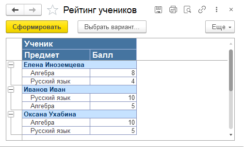
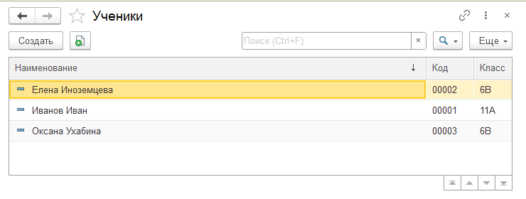
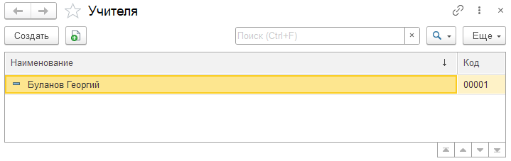
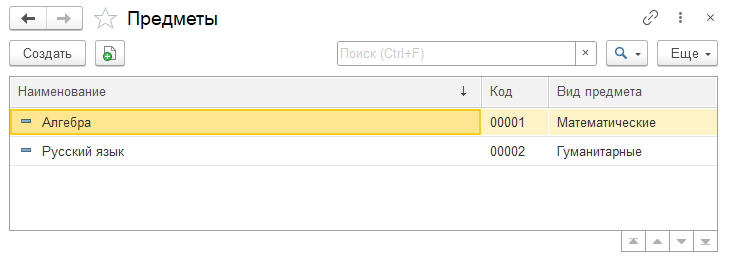
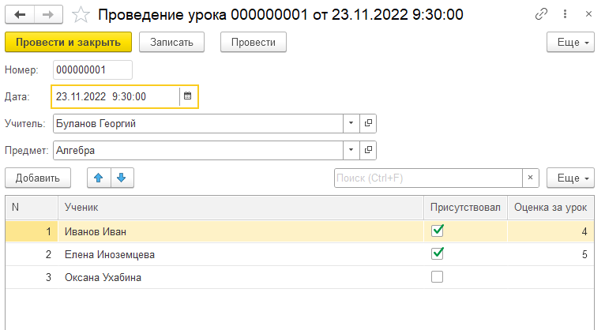

Тема занятия – создать систему, которая позволит контролировать успеваемость студентов. После реализации программы необходимо презентовать ее.
По итогу выполнения задачи должна получиться программа, которая позволяет построить отчет по успеваемости учеников (рис. 18.1).

Рис. 18.1. Пример отчета по успеваемости
В программе необходимо хранить список учеников, преподавателей и предметов (рис. 18.2 – 18.4).

Рис. 18.2. Пример списка учеников

Рис. 18.3. Пример списка учителей

Рис. 18.4. Пример списка предметов
У каждого предмета нужно указывать вид. Всего в системе должно быть три вида предметов:
Проведение каждого урока необходимо фиксировать в программе. Необходимо фиксировать преподавателя, предмет, список учеников, присутствие ученика на уроке, а также баллы, полученные за работу на уроке.

Рис. 18.5. Пример документа по проведенному уроку
В презентации проекта должна быть отображена вся проделанная работа.
Использование презентаций – хороший способ донести информацию о своем проекте и представить его публике. Показать всю проделанную работу и используемые алгоритмы за отведенные на доклад 7-10 минут, может, и не получится, но можно решить основную задачу – заинтересовать слушателей.
Подготовка выступления с презентацией всегда занимает достаточно много времени, поэтому постарайтесь определиться с темой выступления и подготовить презентацию заранее. На последнем занятии скорректируйте доклад и презентацию вместе с преподавателем перед выступлением.
Презентация (набор слайдов, сделанных, например, в PowerPoint) – это практически обязательная вещь в любом докладе. Хороша презентация тем, что одинаково облегчает жизнь и докладчикам, и слушателям. Для докладчика презентация, в первую очередь, – это подсказка, которая всегда перед глазами.